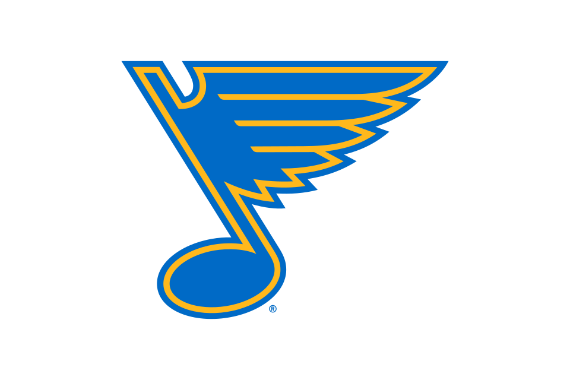

Patriots designate starting guard Alijah Vera-Tucker to return from injured reserve
A hamstring injury sent the March signing to injured reserve in October.
Every league’s headlines, every team’s news.


 Vikings vs. 49ers
Vikings vs. 49ers
 Celtics at Warriors
Celtics at Warriors


 Blackhawks vs. Canucks
Blackhawks vs. Canucks
 Pacers at Knicks
Pacers at Knicks


 Oilers vs. Blues
Oilers vs. Blues


 Raiders vs. Broncos
Raiders vs. BroncosA hamstring injury sent the March signing to injured reserve in October.

Parsons’ family and friends have bought tickets to the game in Los Angeles

Metcalf reportedly won’t be suspended after appearing to try and poke the Eagles’ Cooper DeJean in the eye on Sunday.

The Steelers WR took no responsibility for losing his cool against the Eagles on Sunday.

Giants cornerback Greg Newsome left Sunday's win over the Jaguars with an ankle injury and it will be some time before he will be back in the lineup.

In the wake of the Giants’ biggest win of the season, John Harbaugh may soon be faced with a devastating loss.

Rallis is out after working with the Cardinals since 2023. Teryl Austin will serve as Arizona's temporary DC

Coach John Harbaugh says Newsome suffered a high ankle sprain against the Jacksonville Jaguars

The Dodgers reportedly didn’t make Skubal an official offer before he signed with the Mets.

Cincinnati enters year five of their once-lauded rebuild, as does former top prospect Noelvi Marte.

A mere salary dump … or is there something more to discover in Sean Sullivan?

Tarik Skubal and the Mets agreed to a nine-year, $450 million contract, sources told ESPN. It is the richest deal for a pitcher, both by total and average annual value.

The New York Mets continued their spending spree Monday by coming to terms on a one-year deal with first baseman Paul Goldschmidt, a source told ESPN, a day after agreeing to give Tarik Skubal the largest contract ever to a pitcher.

The Yankees and left-handed reliever Brent Suter are in agreement on a one-year, $4 million contract with a club option for 2028, sources told ESPN's Jeff Passan on Monday.

A full postseason share for the World Series champion Milwaukee Brewers was $493,044, and the total players' pool amount of roughly $114.5 million was down from the previous two seasons.

Luis Gil and the Tigers are in agreement on a one-year, $2.3 million contract, sources told ESPN, as he lands a job just days after the Yankees nontendered him.

Kevin de Bruyne says he has "love" for Manchester City's owners and his feelings for the club will "never change" despite being found guilty of breaching the Premier League's financial rules.

Arsenal will entertain Borussia Dortmund at the Emirates Stadium this Tuesday night as they look to secure a good result at home in the UEFA Champions League. The Gunners were held to a 2-2 draw away ...

Women's soccer was forever changed when the U.S. hosted the 1999 World Cup. With it returning in 2031, ESPN charts the game's explosive growth.

Cole Palmer appeared to fail to acknowledge the Chelsea fans after his side’s 4-1 loss to Leeds on Saturday

Rio Ngumoha shines in Liverpool 4-0 win over Manchester UnitedRio Ngumoha announced himself on one of English football’s biggest stages with a display of composure, incision and end product as Liver...

It's a nightmare opening 45 minutes to Everton's Premier League clash with Brentford in London this evening. The Toffees came into the night looking to solidify their place in the race for the Europe...

Aston Villa will lock horns with Galatasaray at Rams Park this Tuesday evening as they look to secure a good result on the road in the UEFA Champions League. The Villans were held to a scoreless draw ...

Gonzalez was at the helm for both Saturday's defeat to the Kansas City Current and the 2025 loss in the NWSL Championship to Gotham FC

Event: UFC 336: “Van vs. Kape”Date: Sat., Jan. 30, 2027Location: Scotiabank Arena in Toronto, Ontario, CanadaStart times: Prelims Card Start Time 5 p.m. ET | Main Card Start Time 9 p.m. ETStreaming platform: Paramount+ (watch here) UFC 336 Main Event on Paramount+: 125 lbs.: UFC Flyweight Champion Joshua Van vs. Manel…

Long-time UFC welterweight fighter Stephen Thompson revealed whether he is truly retired from mixed martial arts or not.Thompson knocked out Charles Radtke in the featured bout at UFC 334 last week and immediately announced his retirement from MMA. At age 43, “Wonderboy” was the oldest fighter on the UFC roster at the…

The Ultimate Fighter needs a season of Ilia Topuria vs. Paddy Pimblett
Chris Weidman thinks Jiri Prochazka has "PTSD" going into UFC Qatar, and it led to another knockout loss.

Sean O'Malley wants Jon Jones to come out of retirement to fight Josh Hokit.
Nearly two weeks removed from the chaos in Abu Dhabi, Makhachev believes Nurmagomedov's attack on Dvalishvili was much ado about nothing.
Gallagher may never have reached the heights many expected of him, but his career is still one of the most successful in Irish MMA history.
Conor McGregor says he's training for one final walk to the cage. He previously announced his plan is to fight out his contract and leave the UFC.

NBA Cup viewership is up 90% from last season so far this fall, too.

Kevin O’Connor is joined by Three Cone to breakdown the wildest stories from around the NBA this weekend.

So what if the All-Star Game is three months away? We're picking locks and position battles to watch across both conferences.

Porter was with Milwaukee and was the team's last cut in training camp.
Traore has been one of the bright spots in Brooklyn in his second season.
Brooklyn’s Nolan Traore will miss at least the next two months with a hamstring injury, in a tough break for both the fast-rising Frenchman and his struggling Nets.
We go over the perfect lineup for Yahoo High Score fantasy basketball from Week 5.
Andre Snellings breaks down Monday's NBA slate, highlighting the fantasy streamers to add and bets to make.

The Calgary Flames open a five-game road trip Monday night with a stop in Canada’s capital to take on a surging Ottawa Senators team.

Find best bets and props for the biggest games in sports on Monday from the SportsLine Projection Model and top CBS Sports experts


Buffalo goes 2-3-1 on their six-game road swing with a 6-2 victory over the Lightning

The auction house expands into the NHL through a new partnership with the Vegas Golden Knights, connecting game-used memorabilia with one of hockey's youngest championship franchises.

The Senators make no changes after Saturday's victory over Los Angeles, while another former Ottawa 67's captain returns to town.

The Calgary Flames have recalled forward Sam Morton from the Calgary Wranglers, the team announced Monday.